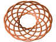

| Graphing Parametric Equations, Functions, Curves and Surfaces with DPGraph |
| Home | Buy | Free Viewer | Legacy Site Licensees Latest news: 12 Nov 2017 | Update to newest version: 19 Dec 2016 Math Art Gallery | Documentation | Links | Privacy | Contact |
After you have downloaded and installed either the full version of DPGraph or the free DPGraph Viewer you can click on the thumbnail pictures to view and manipulate the graphs. If your version of DPGraph or the DPGraph Viewer can't display a graph then you may need to update to the most recent version. To view the commands that created the graphs, click on Edit inside DPGraph or the Viewer. Some versions of Netscape require you to stop and restart your browser after installing.
In addition to its implicit and vector graphing capabilities, DPGraph lets you create parametric graphs ranging from simple 2D parametric curves through 5D parametric surfaces (three spacial dimensions, plus time and color).
|  |
You can use the RECTANGULAR(X,Y,Z), CYLINDRICAL(R,THETA,Z), or SPHERICAL(RHO,THETA,PHI) functions to create parametric graphs in rectangular, cylindrical (with polar as a special case), or spherical coordinates. The variables U and V are the parameters that DPGraph varies in order to create the curves and surfaces.
For example, to create a helical space curve in rectangular coordinates you can type the following command after clicking on Edit inside DPGraph and deleting any previous commands (or, you can copy-and-paste the command from here to the Edit box):
GRAPH3D( RECTANGULAR( COS(6*U), SIN(6*U), U ) )
To create the same helix in cylindrical coordinates, you can type:
GRAPH3D( CYLINDRICAL( 1, 6*U, U ) )
DPGraph doesn't care whether letters are typed in upper or lower case.
The helical space curve is jagged because, by default, DPGraph takes 40 steps in the U and V directions. You can create a smoother and faster graph by setting the number of steps in the U direction to 200, and the number of steps in the V direction to 0 (since the helix doesn't use V). Also, if you don't want the box in the picture, you can turn it off:
GRAPH3D.BOX := FALSE GRAPH3D.STEPSU := 200 GRAPH3D.STEPSV := 0 GRAPH3D( CYLINDRICAL( 1, 6*U, U ) )
Handy trick: 2D parametric graphs are just 3D parametric space curves viewed from the top with perspective turned off. Here's how to create a 2D parametric circle of radius 2 in rectangular coordinates (notice that the range of U has been changed to 0 to 2*PI from its default range of -3 to 3):
GRAPH3D.VIEW := TOP GRAPH3D.PERSPECTIVE := FALSE GRAPH3D.STEPSU := 200 GRAPH3D.STEPSV := 0 GRAPH3D.MINIMUMU := 0 GRAPH3D.MAXIMUMU := 2*PI GRAPH3D( RECTANGULAR( 2*COS(U), 2*SIN(U) ) )
The same circle in polar (cylindrical) coordinates is:
GRAPH3D.VIEW := TOP GRAPH3D.PERSPECTIVE := FALSE GRAPH3D.STEPSU := 200 GRAPH3D.STEPSV := 0 GRAPH3D.MINIMUMU := 0 GRAPH3D.MAXIMUMU := 2*PI GRAPH3D( CYLINDRICAL( 2, U ) )
You can create a thicker helix by drawing a helical tube instead of a helical space curve. To ensure that the top and bottom of the tube don't get cut off by the box, you can change the minimum and maximum Z values of the box to -3.5 and 3.5 from their default values of -3 and 3:
GRAPH3D.BOX := FALSE GRAPH3D.STEPSU := 200 GRAPH3D.STEPSV := 10 GRAPH3D.MINIMUMV := 0 GRAPH3D.MAXIMUMV := 2*PI GRAPH3D.MINIMUMZ := -3.5 GRAPH3D.MAXIMUMZ := 3.5 GRAPH3D( CYLINDRICAL( 1+0.2*COS(V), 6*U, U+0.2*SIN(V) ) )
If you'd like the tube to fill your screen, you can use the PageUp key to zoom in on it. You can also use the PageDown key to zoom it out, the Home key to restore it to its original position, and the arrow keys to rotate it.
Handy trick: since the default ranges for U and V (from -3 to 3) are also the default ranges for X, Y, and Z, you can easily create Z=F(X,Y) graphs. For example, to graph 2*SIN(X*Y):
GRAPH3D( RECTANGULAR( U, V, 2*SIN(U*V) ) )
After using the scrollbar to change A to 0.5. |
If you'd like to vary parameters in your graphs in realtime, you can use the variables A through D in the GRAPH3D command and then vary them by clicking on Scrollbar inside DPGraph (you can also use the scrollbar to slice your graphs, etc.). For example, you can replace some of the constants in the GRAPH3D command for the helical tube by A and B, and then use the following commands to set the initial, minimum, and maximum values for A and B:
GRAPH3D.BOX := FALSE A := 0.2 A.MINIMUM := 0.0 A.MAXIMUM := 0.5 B := 6 B.MINIMUM := 1 B.MAXIMUM := 20 GRAPH3D.STEPSU := 200 GRAPH3D.STEPSV := 10 GRAPH3D.MINIMUMV := 0 GRAPH3D.MAXIMUMV := 2*PI GRAPH3D.MINIMUMZ := -3.5 GRAPH3D.MAXIMUMZ := 3.5 GRAPH3D( CYLINDRICAL( 1+A*COS(V), B*U, U+A*SIN(V) ) )
Use the Scrollbar to vary A and B to get different helixes (helices). |
If you want to animate the helical tube, you can use TIME as a variable in the GRAPH3D command. Here's one way to make the tube compress and decompress:
GRAPH3D.BOX := FALSE A := 0.2 A.MINIMUM := 0.0 A.MAXIMUM := 0.5 B := 6 B.MINIMUM := 1 B.MAXIMUM := 20 GRAPH3D.STEPSU := 200 GRAPH3D.STEPSV := 10 GRAPH3D.MINIMUMV := 0 GRAPH3D.MAXIMUMV := 2*PI GRAPH3D.MINIMUMZ := -3.5 GRAPH3D.MAXIMUMZ := 3.5 GRAPH3D( CYLINDRICAL( 1+A*COS(V), B*U, U*(0.75+SIN(TIME)/4)+A*SIN(V) ) )
Use the Scrollbar to vary A and B to get different helixes. |
You might prefer a different color scheme. Perhaps a black background, a red tube, no mesh lines, and some shading and highlighting (the ranges for shading and highlighting are from 0.0 to 1.0):
GRAPH3D.BOX := FALSE GRAPH3D.BACKGROUND := BLACK GRAPH3D.COLOR := RED GRAPH3D.MESH := FALSE GRAPH3D.HIGHLIGHT := 1.0 GRAPH3D.SHADING := 1.0 A := 0.2 A.MINIMUM := 0.0 A.MAXIMUM := 0.5 B := 6 B.MINIMUM := 1 B.MAXIMUM := 20 GRAPH3D.STEPSU := 200 GRAPH3D.STEPSV := 10 GRAPH3D.MINIMUMV := 0 GRAPH3D.MAXIMUMV := 2*PI GRAPH3D.MINIMUMZ := -3.5 GRAPH3D.MAXIMUMZ := 3.5 GRAPH3D( CYLINDRICAL( 1+A*COS(V), B*U, U*(0.75+SIN(TIME)/4)+A*SIN(V) ) )
Use the Scrollbar to vary A and B to get different helixes. |
If one of the predefined surface colorations (such as solid red) isn't to your liking, then you can set the color to an expression based on U, V, X, Y, Z, R, THETA, RHO, PHI, A, B, C, D, or TIME. The fractional part of the color expression is mapped to a color wheel that goes from red at 0.0, through magenta, blue, cyan, green, yellow, and back to red at 1.0. Here's how to set the color to (THETA+TIME)/(2*PI):
GRAPH3D.BOX := FALSE GRAPH3D.BACKGROUND := BLACK GRAPH3D.COLOR := (THETA+TIME)/(2*PI) GRAPH3D.MESH := FALSE GRAPH3D.HIGHLIGHT := 1.0 GRAPH3D.SHADING := 1.0 A := 0.2 A.MINIMUM := 0.0 A.MAXIMUM := 0.5 B := 6 B.MINIMUM := 1 B.MAXIMUM := 20 GRAPH3D.STEPSU := 200 GRAPH3D.STEPSV := 10 GRAPH3D.MINIMUMV := 0 GRAPH3D.MAXIMUMV := 2*PI GRAPH3D.MINIMUMZ := -3.5 GRAPH3D.MAXIMUMZ := 3.5 GRAPH3D( CYLINDRICAL( 1+A*COS(V), B*U, U*(0.75+SIN(TIME)/4)+A*SIN(V) ) )
You can plot several simultaneous parametric graphs by putting them into a list inside the GRAPH3D command. Here is a pulsing transparent sphere with a pulsing transparent cylinder (the range for transparency is 0.0 to 1.0):
GRAPH3D.BOX := FALSE GRAPH3D.TRANSPARENCY := 0.5 GRAPH3D.STEPSU := 40 GRAPH3D.STEPSV := 20 GRAPH3D.MINIMUMU := 0 GRAPH3D.MAXIMUMU := 2*PI GRAPH3D.MINIMUMV := 0 GRAPH3D.MAXIMUMV := PI GRAPH3D( ( SPHERICAL(3*COS(TIME/4),U,V), CYLINDRICAL(3*SIN(TIME/4),U,6*V/PI-3) ) )
A fun thing to do with parametric equations is to create knots. A simple, yet beautiful, family of knots are the (A,B) torus knots. The basic idea is to start with a torus, for example one with a major radius of 2 and a minor radius of 0.9:
GRAPH3D.BOX := FALSE GRAPH3D.STEPSU := 100 GRAPH3D.STEPSV := 20 GRAPH3D.MINIMUMU := 0 GRAPH3D.MAXIMUMU := 2*PI GRAPH3D.MINIMUMV := 0 GRAPH3D.MAXIMUMV := 2*PI GRAPH3D( CYLINDRICAL( 2+0.9*COS(V), U, 0.9*SIN(V) ) )
Use the Scrollbar to vary A and B to get different knots. |
Next, pick two integers A and B. A is the number of times the knot will wrap around the hole; B is the number of times the knot will wrap through the hole. If A and B aren't relatively prime, then the knot will wrap over itself. Replace U with A*U, and V with B*U (thus eliminating V), to create an (A,B) torus knot. You can change A and B using the scrollbar to see lots of different knots. Notice the use of the floor function to ensure that A and B are integers, and the use of GRAPH3D.VIEW := TOP:
GRAPH3D.BOX := FALSE GRAPH3D.VIEW := TOP A := 7 A.MINIMUM := 0 A.MAXIMUM := 16 B := 11 B.MINIMUM :=0 B.MAXIMUM := 16 GRAPH3D.STEPSU := 400 GRAPH3D.STEPSV := 0 GRAPH3D.MINIMUMU := 0 GRAPH3D.MAXIMUMU := 2*PI GRAPH3D( CYLINDRICAL( 2+0.9*COS(FLOOR(B)*U), FLOOR(A)*U, 0.9*SIN(FLOOR(B)*U) ) )
Use the Scrollbar to vary A and B to get different knots. |
As with the helixes above, you can use V to put a tube around the knot:
GRAPH3D.MESH := FALSE GRAPH3D.BOX := FALSE GRAPH3D.VIEW := TOP GRAPH3D.HIGHLIGHT := 0.5 GRAPH3D.SHADING := 1.0 GRAPH3D.COLOR := BROWN A := 7 A.MINIMUM := 0 A.MAXIMUM := 16 B := 11 B.MINIMUM :=0 B.MAXIMUM := 16 GRAPH3D.STEPSU := 400 GRAPH3D.STEPSV := 20 GRAPH3D.MINIMUMU := 0 GRAPH3D.MAXIMUMU := 2*PI GRAPH3D.MINIMUMV := 0 GRAPH3D.MAXIMUMV := 2*PI GRAPH3D( CYLINDRICAL( 2+0.9*COS(FLOOR(B)*U)+0.1*COS(V), FLOOR(A)*U, 0.9*SIN(FLOOR(B)*U)+0.1*SIN(V) ) )
Use the Scrollbar to vary A and B to get different rollercoasters. |
There are lots of fun things that you can do with torus knots. For example, you can turn off top view and use a time-dependent coloration to create a dynamic realtime rollercoaster. Notice how the "track" is flat instead of tubular; V has a range of 0 to PI with the number of steps set to 1:
GRAPH3D.MESH := FALSE GRAPH3D.BOX := FALSE GRAPH3D.BACKGROUND := BLACK GRAPH3D.HIGHLIGHT := 0.5 GRAPH3D.SHADING := 1.0 GRAPH3D.COLOR := 0.1 + 0.6*FLOOR( 2*PI/5.8*( U/(2*PI)+TIME/16 - FLOOR(U/(2*PI)+TIME/16) ) ) A := 3 A.MINIMUM := 0 A.MAXIMUM := 16 B := 5 B.MINIMUM :=0 B.MAXIMUM := 16 GRAPH3D.STEPSU := 400 GRAPH3D.STEPSV := 1 GRAPH3D.MINIMUMU := 0 GRAPH3D.MAXIMUMU := 2*PI GRAPH3D.MINIMUMV := 0 GRAPH3D.MAXIMUMV := PI GRAPH3D( CYLINDRICAL( 2+0.9*COS(FLOOR(B)*U)+0.1*COS(V), FLOOR(A)*U, 0.9*SIN(FLOOR(B)*U)+0.1*SIN(V) ) )
CAVEATS (these will be fixed in future versions of DPGraph):
Copyright © 1997-2018 by DPGraph. All rights reserved.